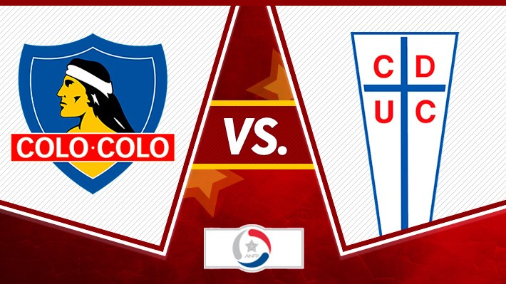
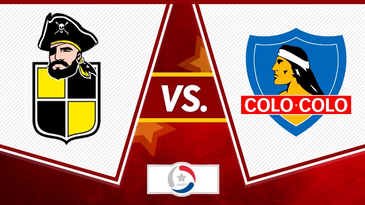
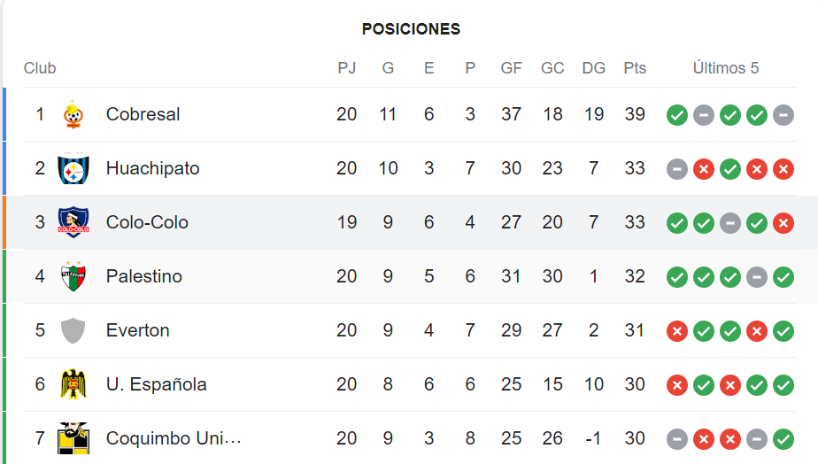

Colo-Colo vs U.Catolica
"Partido por Copa Chile."

El partido por Copa Chile que se llevara acabo el dia Mié, 16/08 a las 18:00 es el partido de ida y se realizara en el estadio Santa laura de la comuna de Independecia.
El partido de vuelta se realizara el dia (por definir), el partido se llevara acabo en el estadio Monumental de la comuna de Macul.
Colo-Colo vs Coquimbo Unido
"Partido de Primera división de chile".

Este partido por la fecha 21 de la Primera división de Chile se realizara el dia Sáb, 12/08, 15:00
se realizara en el estadio Francisco Sánchez Rumoroso que queda en la ciudad de Coquimbo.
Tabla posicion Primera división Chile
"Los primeros 7 lugares".

En el primer lugar tenemos a Cobresal con 39Pst, con opcion de ir a la Copa Libertadores
En el segundo lugar tenemos a Huachipato con 33Pts, con opcion de ir a la Copa Libertadores
En el tercer lugar tenemos a Colo-Colo con 33pts y un partido menos, con opcion de ir a los Playoffs de la Copa Libertadores
En el cuarto lugar tenemos a Palestino con 32pts, con opcion de ir a la Copa Sudamericana
En el quinto lugar tenemos a Everton con 31pts, con opcion de ir a la Copa Sudamericana
En el Sexto lugar tenemos a U.Española con 30pts, con opcion de ir a la Copa Sudamericana
En el septimo lugar tenemos a Coquimbo Unido con 30pts, con opcion de ir a la Copa Sudamericana